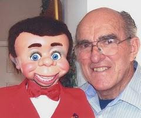

Who's He?
4/5/2010
{kind=link}

Question: I enjoy reading your blog every day.Lots of information, humor etc. But now, a question:
On the blogspot of Maher Studios - Encore there are some photograph's of you, repairing a figure. On the last picture (right hand column) you are accompanied by a figure with a red bow. Who's he? And is he still 'in production'? (What I hope).
* * * * *
Answer: That's my little guy, "R.C"., who was built for me about 25 years ago by Craig Lovik. Originally sold as a 38" Clipper, I cut the body down in size to make it a more compact and easier to handle 36" size. The head remained the same size, of course. We sold Clippers through Maher Studios until sometime in the '90s when the mold used to cast that figure became unusable, forcing the figure to be retired. (And Craig no longer is in the figuremaking business.)
Answer: That's my little guy, "R.C"., who was built for me about 25 years ago by Craig Lovik. Originally sold as a 38" Clipper, I cut the body down in size to make it a more compact and easier to handle 36" size. The head remained the same size, of course. We sold Clippers through Maher Studios until sometime in the '90s when the mold used to cast that figure became unusable, forcing the figure to be retired. (And Craig no longer is in the figuremaking business.)